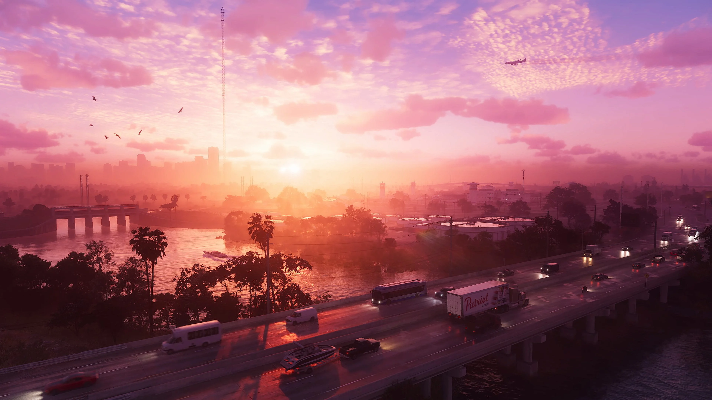
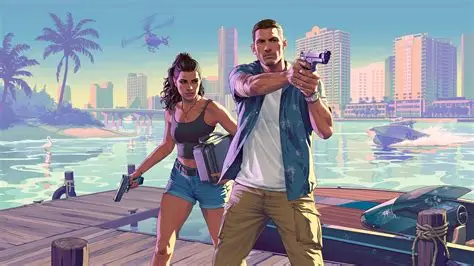
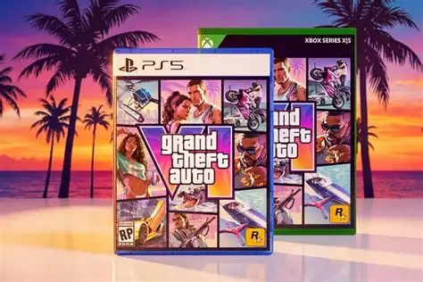
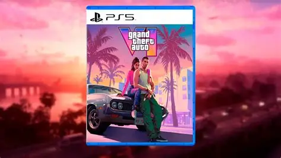

VIDEOJUEGOS
La música del nuevo videojuego podría llegar a las tiendas en formato físico.
Publicado el 27 de septiembre de 2026




GTA 6 es uno de los videojuegos más esperados de los últimos años. Aunque el juego podría apostar principalmente por el formato digital, su banda sonora sí estaría disponible en formato físico.
Esta decisión ha llamado la atención de los jugadores y coleccionistas.
Las copias físicas permiten conservar el producto y tener una edición para coleccionar.
La publicación de la banda sonora demuestra que todavía existe interés por este tipo de productos.
La música siempre ha sido una parte fundamental de la saga Grand Theft Auto.
Como GTA 6 estará ambientado en Vice City, se espera que la música tenga un papel muy importante.
El lanzamiento de GTA 6 está previsto para el 19 de noviembre. Hasta entonces, los jugadores seguirán esperando nuevos detalles.